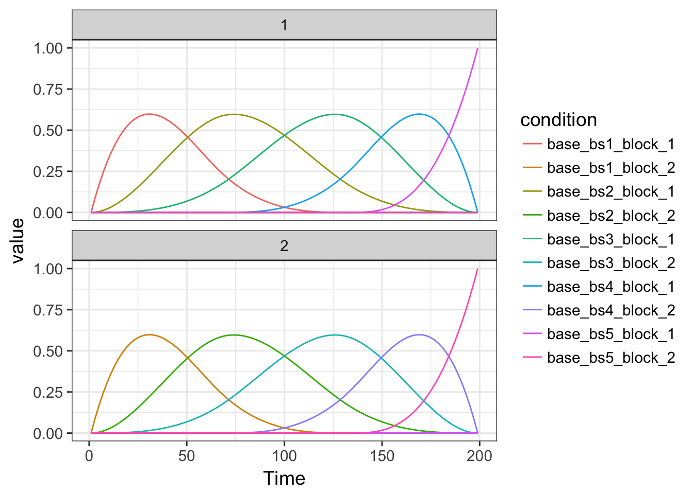

Baseline Model
Bradley R. Buchsbaum
2017-11-27
fMRI Baseline Model
An “baseline model” refers to the set of regressors used to capture variance associated with noise signals in the fMRI time-series data. These regressors are not formed by convolving a hemodynamic response with event onsets, but rather directly model sources of variance in the data. Low-frequency baseline trends are often modeled with a set of basis functions, such as b-splines, polynomial regressors, or a Fourier basis. Nuisance trends can also be derived from the data itself, for example, the global signal mean, motion parameters, or estimated noise components via PCA or ICA.
Basic baseline model with b-splines and polynomials
TR <- 2
sframe <- sampling_frame(blocklens=c(100,100), TR)
bmodel <- baseline_model(basis="bs", degree=5, sframe=sframe)
print(bmodel)## baseline_model
## name: baseline_bs_5
## basis type: bs
## degree: 5
## drift columns: 10
## constant columns: 2
## nuisance columns: 0
## total columns: 12
## design_matrix:
## # A tibble: 200 x 12
## const… cons… base_… base_b… base_b… base… base… base… base… base… base…
## <dbl> <dbl> <dbl> <dbl> <dbl> <dbl> <dbl> <dbl> <dbl> <dbl> <dbl>
## 1 1.00 0 0 0 0 0 0 0 0 0 0
## 2 1.00 0 0.0868 0.00135 4.64e⁻⁶ 0 0 0 0 0 0
## 3 1.00 0 0.166 0.00531 3.71e⁻⁵ 0 0 0 0 0 0
## 4 1.00 0 0.237 0.0117 1.25e⁻⁴ 0 0 0 0 0 0
## 5 1.00 0 0.301 0.0204 2.97e⁻⁴ 0 0 0 0 0 0
## 6 1.00 0 0.357 0.0312 5.80e⁻⁴ 0 0 0 0 0 0
## 7 1.00 0 0.407 0.0441 1.00e⁻³ 0 0 0 0 0 0
## 8 1.00 0 0.451 0.0587 1.59e⁻³ 0 0 0 0 0 0
## 9 1.00 0 0.488 0.0751 2.37e⁻³ 0 0 0 0 0 0
## 10 1.00 0 0.519 0.0930 3.38e⁻³ 0 0 0 0 0 0
## # ... with 190 more rows, and 1 more variable: base_bs5_block_2 <dbl>plot(bmodel)
bmodel2 <- baseline_model(basis="poly", degree=5, sframe=sframe)
plot(bmodel2)
Adding arbitrary nuisance regressors
In addiiton to structured basis sets, we can also add arbitrary signals to the baseline model. Such signals are also organized by block on the assumption that nuisance signals are often block-specific and “reset” across scans. To add a set of nusiance variables to the baseline model, then, they should be split by block and placed in a list.
TR <- 2
sframe <- sampling_frame(blocklens=c(100,100), TR)
## generate two arbitrary nusiance signals.
nuis1 <- rnorm(100*2)
nuis2 <- rnorm(100*2)
## construct a set of data.frames, each with two columns (nuis1 and nuis2)
nuislist <- split(as.data.frame(cbind(nuis1, nuis2)), blockids(sframe))
bmodel <- baseline_model(basis="bs", degree=5, sframe=sframe, nuisance_list=nuislist)
print(terms(bmodel))## $constant
## fmri_term: block_term
## Term Name: constant
## Num Rows: 200
## Num Columns: 2
##
## $baseline_bs_5
## fmri_term: baseline_term
## Term Name: baseline_bs_5
## Num Rows: 200
## Num Columns: 10
##
## $nuisance
## fmri_term: baseline_term
## Term Name: nuisance
## Num Rows: 200
## Num Columns: 4plot(bmodel, term_name="nuisance")
plot(bmodel, term_name="baseline_bs_5")